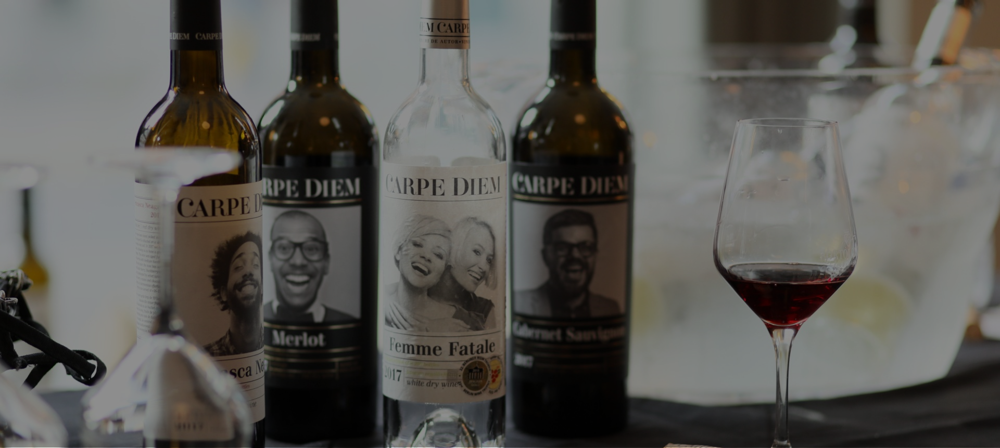

Femme Fatale
Carpe Diem
-
Finely balanced wine with a lot of character - light, fresh, but still rich of fruity flavour
0,75 L
13.5%
150 DKK
Quantity:
1
THE WINERY
Carpe Diem
Carpe Diem is a family owned winery that goes back four generations. The winery sits in Codru wine region, known for its amazing terroir. They use both French inspired and indigenous varieties to make individual unique wines and blends. The vineyards fill 10,5 ha, so therefore they are part of the Moldovan Association for Small Wineries. Each wine is delicately produced, and all grapes are hand picked and harvested manually.